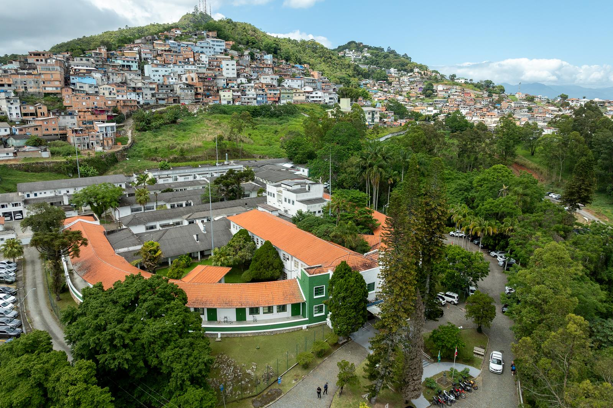
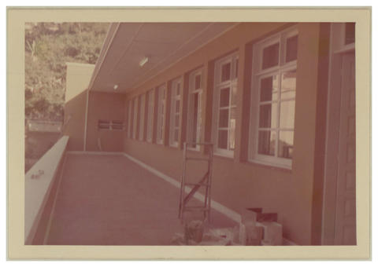
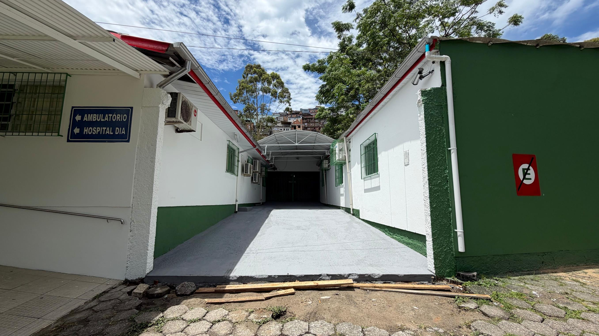
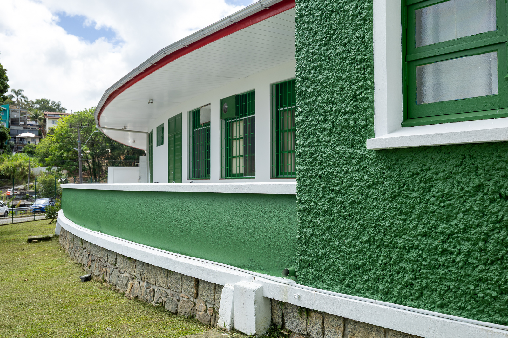
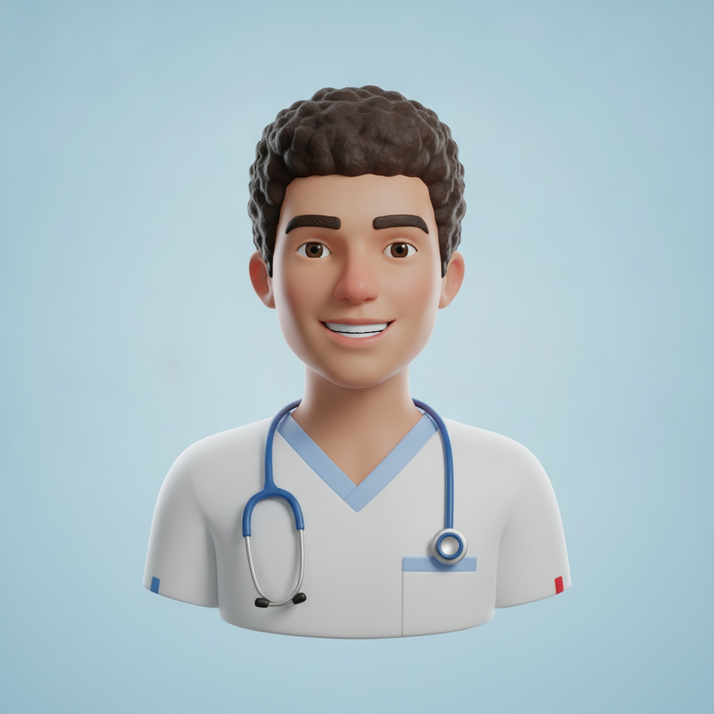

Referência estadual em infectologia e pneumologia. Único hospital 100% público de SC reconhecido entre as melhores UTIs do Brasil.

Inaugurado em 6 de janeiro de 1943 pelo então governador Nereu Ramos, o hospital nasceu da política de saúde pública do primeiro governo Vargas. Construído na área da Pedra Grande em modelo pavilhonar, começou com 100 leitos — 60 deles dedicados ao tratamento da tuberculose.
Mais de oito décadas depois, o HNR é a principal referência estadual em infectologia, pneumologia e cirurgia torácica — e o único hospital de Santa Catarina vocacionado em infectologia com residência médica na área.
📚 Fontes oficiais: SES/SC — página do HNR ↗ · 80 anos do HNR ↗ · Estudo histórico (BVS/LILACS) ↗
Erguido na área da Pedra Grande, projeto pavilhonar de Paulo Motta e Udo Deeke.
Aberto pelo governador Nereu Ramos com foco em doenças infectocontagiosas.
Pioneirismo cirúrgico realizado dentro do hospital.
Designado referência em doenças infecciosas e parasitárias.
Reconhecido como centro estadual de tratamento.
Forma a primeira turma de residentes médicos em Infectologia.
Hospital de retaguarda e referência estadual durante a pandemia.
Fachada renovada com as cores de Santa Catarina e modernização da UTI.
Atendimento de alta complexidade, integralmente pelo SUS, em áreas onde somos referência para todo o estado.
Referência estadual com residência médica própria.
Doenças pulmonares e tisiologia (tuberculose).
Procedimentos de alta complexidade respiratória.
Acompanhamento especializado e contínuo.
Pelo 3º ano consecutivo, a UTI do Hospital Nereu Ramos é reconhecida entre as melhores do Brasil pela AMIB / Sistema Epimed — o único hospital 100% público da rede estadual de SC com a certificação, entre quase 2 mil UTIs monitoradas no país.
"Essa conquista reafirma que é possível oferecer assistência intensiva de alto nível no SUS."
— Bárbara Maurício Caetano Leite, Diretora do Hospital"Mostra que a medicina intensiva pública pode e deve ser sinônimo de alta performance."
— Lara Kretzer, Gerente Médica


Confira os horários por setor. Em caso de dúvida, ligue para (48) 3665-9401 antes de comparecer.
2 visitantes por horário · revezando 1 por vez à beira do leito
4 visitantes por dia · revezando 1 por vez
Horários de refeição do acompanhante
ℹ️ As visitas seguem o POP CCIH-09 e demais orientações da Comissão de Controle de Infecção Hospitalar. Os horários podem sofrer ajustes conforme a condição clínica do paciente e orientação da equipe.

Nereu RespondeTire suas dúvidas